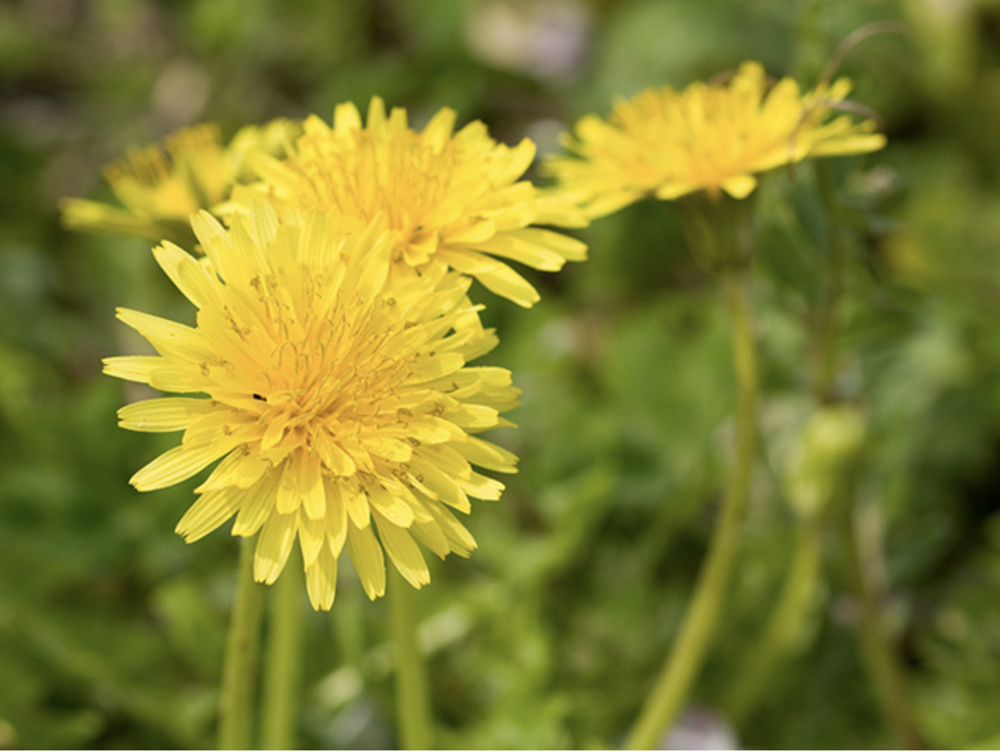
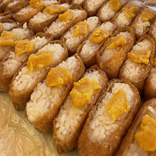
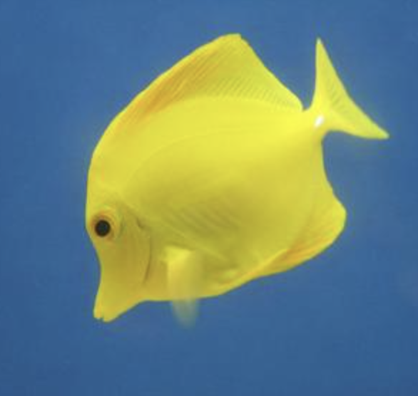

セカイを変えるしあわせの"Yellow"
ここで待ってるよ
Good Yellow Tokyo
ABOUT
Good Yellow Tokyoについて
Good Yellow Tokyoは、様々なYellowのコレクションルームです。
Yellowの色をしたモノ・コトをたくさんコレクションして、できるだけ多くの人に元気を届けたい。
そして、たまごをはじめ、チーズ・ひまわり・たんぽぽなど、当たり前にある美しいyellowを再発見したい。
そんな想いから、Good Yellow Tokyoは、歩みを始めています。
サイトだけでなく、リアルなイベントやファンミーティングなど
あなたの元気を引き出すためのサポートをします。
- 
- 
-

- 
本格的なyellow実地研修
Yellowの知識もしっかりと取得
コレクションにはしっかりとした色に対する知識が欠かせません。
Good Yellow Tokyoでは、一流講師陣による
Yellowコレクションに必要な”いろは”を余すところなく学べます。
Yellowそのものではなく、色全体を学ぶことも可能ですので
ワールドワイド展開も夢ではないでしょう。
Yellowコンペはカラーティスティング審査あり
Good Yellow Tokyoでは最後の2ヶ月間でカラーコンペを実施。
セミプロとして、Yellow作りを実際に行います。コンペ後、
一般参加によるカラーティスティング審査があるため、セミプロの
目線だけでなく、消費者の目線から、Yellowエキスパートとしての
Yellowを、しっかりと評価いただくことができます。
DIARY
人気アーチストTDさんによる、Yellow デモンストレーションを毎日お届けします。

2023/04/15
2023/04/13
2023/04/12